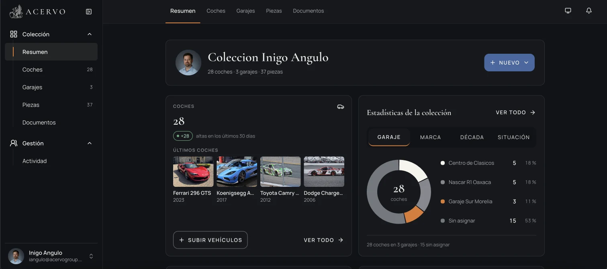

One person, eight agents, two human gates. A production platform for serious car collections.
Three partners, no engineering team, no funding until the MVP proved itself. I owned product and engineering, built the engineering team out of AI agents, and designed the delivery system that lets one person ship to production every few days without losing control of what ships.
Acervo is a private management platform for automotive collections in Mexico and Latin America: a digital passport per car, garages, parts custody, AI assisted onboarding, an audit trail on every change and a sealed-offer private market. It runs at app.acervogroup.com, by invitation.
The product problem was never generating code. It was making an agent team supervisable: who decides, who executes, who may touch what, and what counts as done.

The owner’s home. One collection, its garages, parts and documents, and the breakdown an owner actually asks for: by garage, by brand, by decade, by situation.
A hundred cars across several cities, managed in Excel, WhatsApp and one trusted person’s memory. The obvious plan was an agency. The real bottleneck was never typing code.
Serious collections in Mexico range from a handful of cars to more than a hundred, spread across garages in different states. Records are inconsistent, provenance is hard to prove, parts go missing between workshops, and every request from an insurer, a buyer or a customs lawyer starts a scramble through folders and chats.
In September 2026 I started Acervo with two partners: one with field experience and a network of collectors, the other leading sales and growth. The first test collection was real: over 100 cars plus a spare parts inventory, owned by a family in that network. The constraint was explicit: nothing signed and nothing funded until the MVP proved it was worth it.
A spec, a Figma file and an agency is two to four months and a five figure budget before a collector touches anything. The bottleneck was deciding what to build, in what order, and knowing when something was done. That is product work. If the decisions stayed mine and the typing was delegated, one person could run a small engineering team. The design problem became the team itself.
Three humans with different authority, one lead agent, seven specialists. The architecture is not what each one does. It is what each one is not allowed to touch.
Each agent lives in a file under .claude/agents/ with a mandate, a model and a boundary. The lead decomposes tickets, launches workers, integrates and merges with green checks. Specialists build. Three judgment agents on the strongest model review design, code and security, and they demonstrate failures, they never fix them. By budget, a ticket’s worker usually plays data, backend and frontend at once; security always runs separately.
/aprobar of a promotion, founder actions (panels, billing, advisors).ONLY ONE WHO approves a releasedocs/state.md, docs/decisions/ and the Notion board in sync.NEVER touches promover.yml or production flows (rule 27) · no Vercel credentials · no production datasupabase/migrationsBuild agents run on the cheaper model. Judgment agents run on the strongest one. The expensive tokens go to saying no.
Eight steps, five lanes, two human gates. A worker never sees main, a decision is one id and one letter, and a merge needs five green checks on the exact SHA.
The process is the one I would run with a human team, made stricter because agents will happily report a template as a result. Every ticket carries a measurable acceptance criterion. Every delivery lists those criteria one by one as VERIFIED or IMPLEMENTED, with the PR, the SHA and the CI run id. Every open question comes back as a numbered decision I answer with a letter: 374-4 A. Click a step.
Only two steps need a human. Both are the ones where an agent would be cheapest to trust and most expensive to be wrong.
Main freezes, a pen test says PASS, nine production queries get measured by someone who is not the lead, and then one human types /aprobar.
Promotions are where an agent team is most dangerous, because everything looks done. So the lead cannot touch the promotion workflow at all, the security agent runs a full pen test on the exact candidate, and the production measurements are taken by a separate session that reports back what it actually saw. A template with placeholders is not a measurement. Fifteen promotions have gone through this in seven weeks.
A digital passport per car, garages that log every move, parts with custody, and an onboarding that accepts whatever the collector already has.
Owners and managers share one collection with per-action permissions. Each car carries photos, history, maintenance and documents, exportable at any time. Cars belong to garages and every move is logged, individually or in batches. A parts inventory tracks condition, location and who holds each item. Every change writes to an audit log tied to an author and a timestamp.
Onboarding takes photos, spreadsheets, PDFs or a Drive folder and turns them into draft records for review, or a concierge team does it. From car photos the system suggests make, model, generation, body, colour and year range, and reads the VIN from a plate photo. Every suggestion needs a human confirmation, and the log records who confirmed it. On top sits the business layer: three visibility states per car, buyer wishlists with match alerts, brokerage for a commission, a valuation block and an on-brand PDF report for insurers and buyers.
Design ran in parallel in Figma: a token library, a 26 component kit, the same component names in Figma and code. The brand palette (ink, ivory, orange) is identity and action only; a separate functional colour set feeds every status, chip and alert.
 Car passport
Car passport Garages
Garages Parts & custody
Parts & custodyMobile first and one-handed, for the person standing in the garage on a bad connection. Spanish (es-MX) throughout.
Sixty to eighty tickets opened a week, forty shipped, by one person. The gap is not backlog, it is the specialists and the judgment agents generating the next tickets from what they find.
The board is the honest record: 424 tickets opened since September 16, 228 shipped, the rest open, blocked or archived. Week one was infrastructure. Week three was the first promotion. From week four the rhythm settles at roughly forty tickets shipped a week, with a security review or a pen test behind most of them.
Not a technical problem. Telling the difference between something that looks verified and something that is. Seven times a green check proved nothing, and each time it came through a different door.
I asked the lead agent, on day 48, what the biggest challenge of the whole build had been. Its answer is the most honest thing in this case study, and it is the same lesson the human gates exist for. Every false signal looks exactly like a good one: a green check, a success, a 0 pending, a block that matches what was expected. And the result you most want to believe is the one that says you are done.
“Every false signal looks exactly like a real one. A green check, a success, a zero pending, a block that matches the expected values: they read the same whether they are true or not. And the result most tempting to believe is precisely the one that confirms you have finished.”
gh could change; a Vercel session that could deploy without going through promover.yml. Rules 27 and 28 came out of that. The question that settled every case was never whether a mechanism sounds reasonable, but who can change it.
What was chosen, what was rejected, and why.
| Decision | What we chose | What we rejected | Why |
|---|---|---|---|
| Team shape | Cheap models build, strong models judge; judgment agents prove failures and never fix them | One strong model doing everything | The expensive tokens go to saying no. A reviewer that also fixes stops being a reviewer. |
| Who merges | Only me for two weeks, then the lead for non critical PRs, five checks green on the exact SHA | Agents merging from day one | Trust the process once the review rules have been tested on real PRs, not before. |
| Who touches production | Nobody in the build. The lead has no production credentials; measurements come from a separate session | Lead runs its own production checks | An agent reporting on its own release will report a template as a result. It did, once. |
| Decisions | Numbered questions in each delivery, answered by id and letter, recorded in docs and Notion | Free text conversations | A decision you cannot grep did not happen. |
| Identity | No KYC documents stored; manual verification, access by referral | Built-in KYC with document upload | A collector’s trust is the product. Storing passports is a liability, not a feature. |
| Security gate | Ship the risky feature behind a flag, off in production, after a FAIL | Delay the whole promotion | Production moved on time; the risky surface stayed dark until it passed. |